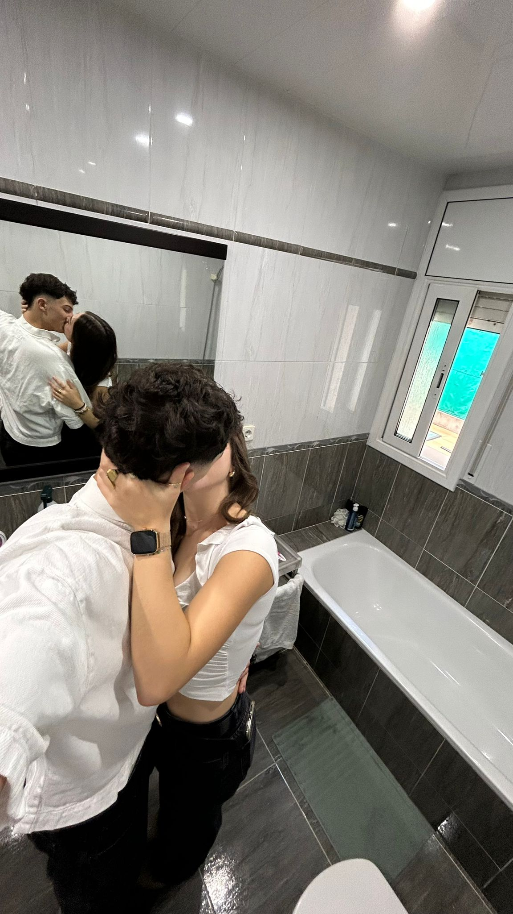
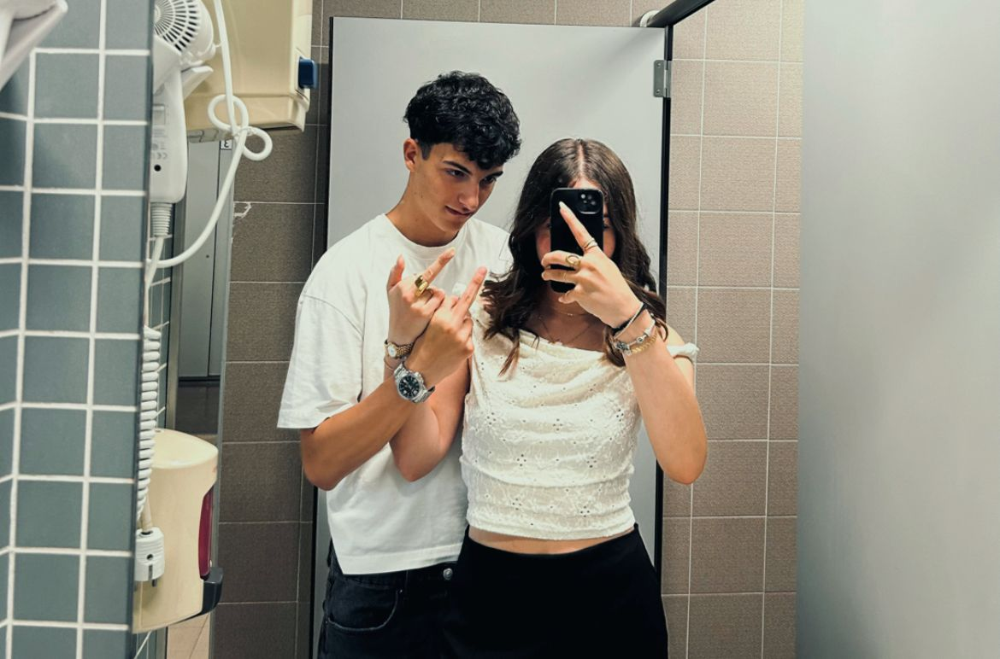

Feliz Navidad💛
Pues fue complicado, muy complicado. No fue nada fácil para mí al principio porque no lo sabía, que me gustabas. Yo no solo vi una chica guapa las primeras veces, vi una chica interesante, inteligente, divertida, con la que me podía pasar horas hablando, riendo o callados, que no se me hacía pesado. En ese momento yo me puse a pensar: “¿de verdad me gusta?”. Me hice esta pregunta porque yo pensaba que lo que pasaba entre nosotros era más una relación de amistad, ya que nos llevábamos súper bien y en pocos momentos pensaba en besarte, no porque no me parecieras guapa, sino porque me gustabas tanto que solo quería saber más de ti y hablar contigo toooodo el día. Entonces me puse a pensar, a pensar y me rayé un poco, hasta se lo medio conté al Dani y todo para ver si él me podía ayudar. El caso es que me di cuenta de que si me pasaba eso era porque empezaba a sentir cosas por ti, y el siguiente día que nos vimos llegó el tan esperado beso; ahí fue el momento en el que me conquistaste ya del todo, ya era todo tuyo.
En cuanto a lo que hiciste para gustarme no fue nada, ser tú misma y mostrarme una parte de ti bonita, que es como eres tú como persona. En verdad me he enamorado de ti, de tu forma de ser, de tratar a las demás personas, de aceptarme a mí tal y como soy, que a veces soy muy pesado y entiendo que cuesta, jeje. Yo siempre te estaré agradecido por ser mi profesora y mi mentora del amor. Tú me has enseñado todo lo que sé, a cómo hay que tratar a una chica, porque hasta ahora mi madre me había dicho cosas, pero tú me has abierto los ojos de verdad. Eres toda una inspiración para mí, te admiro mucho de verdad; aunque no lo quieras aceptar, eres lo mejor que hay. Te quiero muchísimo, eres el amor de mi vida y sé que estamos hechos el uno para el otro y estamos destinados a estar juntos para siempre. Siempre te voy a querer por todo lo bueno que me has hecho, le has dado color a mi vida y me has hecho ver el verdadero sentido de ella.
Podría seguir diciendo cosas bonitas de ti todo lo que me queda de vida y aun así me faltaría muchísimo por contar, que para contar son todas las historias y momentos que vamos a vivir, que pasarán de generación en generación. Primero se lo contaremos a nuestros hijos, luego nuestros nietos, seguido de nuestros bisnietos; sí, bisnietos, yo me niego a morir, quiero seguir disfrutando de ti para siempre.

